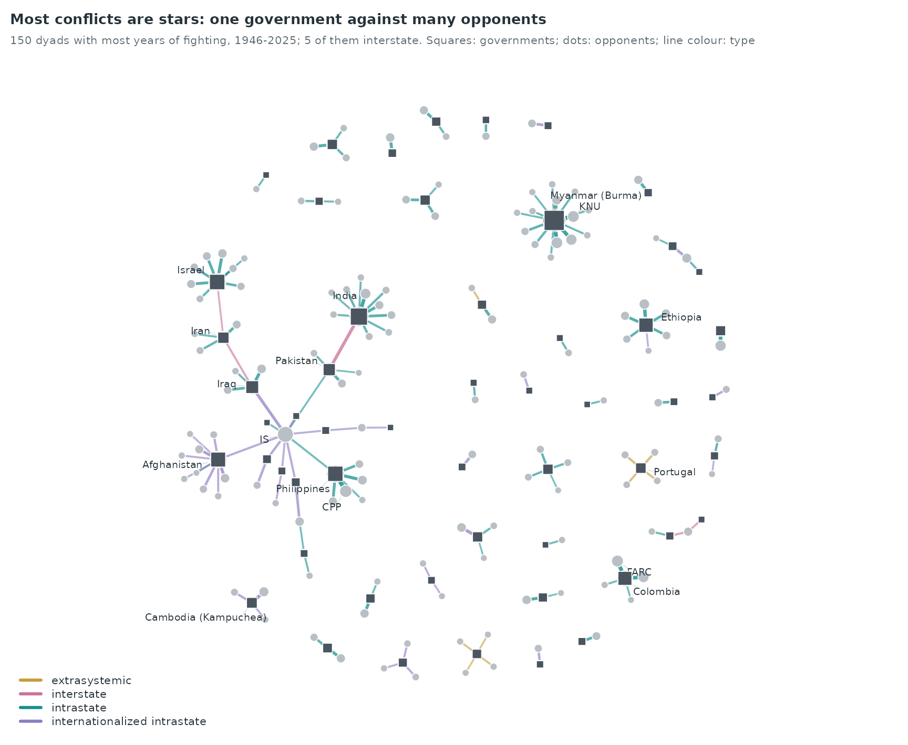
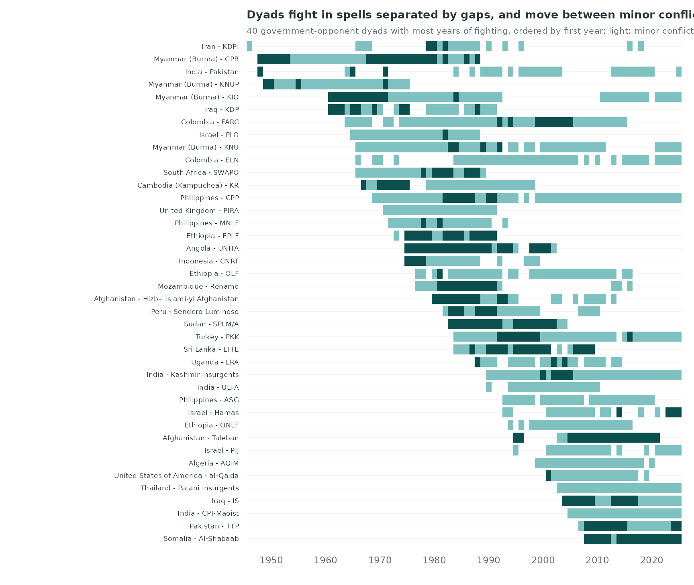
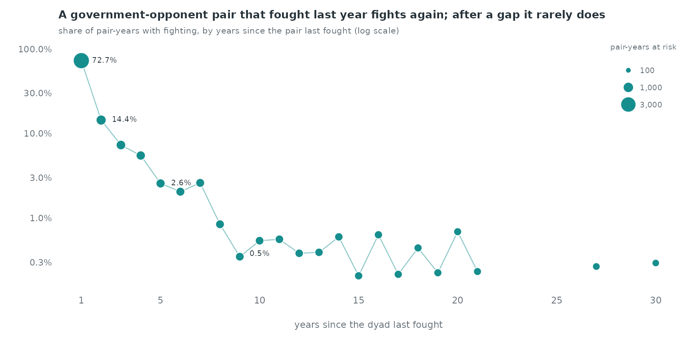
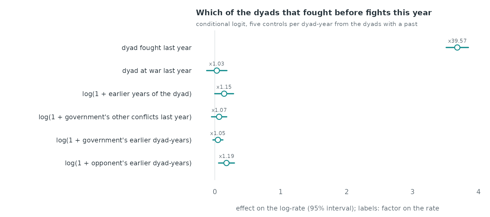
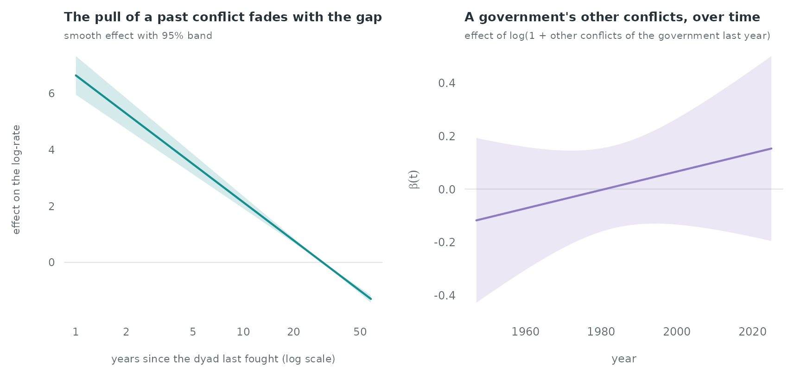

Case study: armed-conflict dyads, 1946–2025
Source:vignettes/articles/case-conflict.Rmd
case-conflict.RmdArmed-conflict dyads, 1946–2025
ucdp_dyads is the dyadic dataset of the Uppsala Conflict
Data Program (UCDP, version 26.1, CC BY 4.0): one row for every year in
which a government (sender, side A) and an opponent
(receiver, side B) fought with at least 25 battle-related
deaths. The opponent is a rebel group, or another government in an
interstate conflict. intensity_level is 2 (war, 1,000 or
more deaths in the year) or 1 (minor conflict). This case study asks how
strongly a dyad’s own past predicts its fighting in a given year, how
fast that memory fades once a conflict stops, and whether a government
at war with one opponent is more likely to fight another.
data(ucdp_dyads)
u <- ucdp_dyads
c(dyad_years = nrow(u), dyads = length(unique(u$dyad_id)),
governments = length(unique(u$sender)), opponents = length(unique(u$receiver)),
first = min(u$year), last = max(u$year))
#> dyad_years dyads governments opponents first last
#> 3518 697 121 614 1946 2025
table(type = type_lab[as.character(u$type_of_conflict)], intensity = u$intensity_level)
#> intensity
#> type 1 2
#> extrasystemic 105 29
#> internationalized intrastate 436 253
#> interstate 96 59
#> intrastate 2148 392A few sides are coalitions (side A lists several governments, for example the Arab states in 1948); each is kept as one actor.
Who fights whom

Intrastate conflicts make the network a set of stars: one government against many rebel groups. Myanmar (Burma) has fought 43 different opponents, Chad 30 and India 28. Interstate dyads join governments to each other and appear as the few lines between stars.
Spells, gaps and recurrence

Most long dyads fight in spells: years of fighting, a gap, and fighting again with the same opponent. The next figure counts how often a dyad that has fought before is active again, by the number of years since it last fought.
active <- split(u$year, paste(u$sender, u$receiver, sep = "\r"))
haz <- do.call(rbind, lapply(active, function(y) {
y <- sort(unique(y)); yrs <- (min(y) + 1):2025
last <- vapply(yrs, function(t) max(y[y < t]), 0)
data.frame(gap = yrs - last, active = yrs %in% y)
}))
h <- aggregate(list(active = haz$active, n = rep(1, nrow(haz))), list(gap = haz$gap), sum)
h$rate <- h$active / h$n
head(h, 4)
#> gap active n rate
#> 1 1 2508 3450 0.72695652
#> 2 2 133 923 0.14409534
#> 3 3 57 781 0.07298335
#> 4 4 39 711 0.05485232
A dyad that fought last year fights again with probability 72.7%. After a gap of two years the share is 14.4%, after five years 2.6% and after ten years 0.5%.
Case-control design for yearly events
The events are dyad-years: (government, opponent, year).
All events of a year share the same time, which matters for both the
controls and the statistics.
Risk set. The question is which of the dyads that
have fought before is active in a given year.
sample_non_events(mode = "two") would draw controls from
every government × opponent pair, and most of those pairs never could
fight (a government and a rebel group of another continent); the dyad’s
own past would then separate events from controls almost perfectly. The
controls are therefore drawn from the dyads that fought in an earlier
year: five per event, uniformly, excluding the event’s own dyad. A
dyad’s first year (its onset) has no comparable risk set here and is
left out. A control may be a dyad that also fought in the same year, as
another row: this is the Breslow convention for tied times, which keeps
a tied event at risk.
ev <- u[order(u$year, u$dyad_id), ]
el <- data.frame(sender = ev$sender, receiver = ev$receiver, time = ev$year)
dk <- paste(el$sender, el$receiver, sep = "\r")
first_year <- tapply(el$time, dk, min)
set.seed(1)
cc <- do.call(rbind, lapply(which(el$time > first_year[dk]), function(i) {
pool <- setdiff(names(first_year)[first_year < el$time[i]], dk[i])
sr <- do.call(rbind, strsplit(sample(pool, 5), "\r"))
data.frame(stratum = i, event = c(1L, rep(0L, 5)), sender = c(el$sender[i], sr[, 1]),
receiver = c(el$receiver[i], sr[, 2]), time = el$time[i])
}))
c(strata = length(unique(cc$stratum)), rows = nrow(cc), onsets_left_out = sum(el$time == first_year[dk]))
#> strata rows onsets_left_out
#> 2823 16938 695Statistics. endogenous_features()
updates the history row by row, so an event would see the other rows of
its own year. To use only earlier years, each year’s rows are scored
with prior_log holding the events of all earlier years and
an empty history_log, so no row of the current year enters
the history.
yrs <- sort(unique(cc$time))
cc <- do.call(rbind, lapply(yrs, function(y)
endogenous_features(cc[cc$time == y, ], history_log = el[0, ],
prior_log = if (any(el$time < y)) el[el$time < y, ],
stats = c("recency", "sender_outdegree", "receiver_indegree"))))
# the dyad's own past: number of earlier active years, and war last year
dkey <- dk; ckey <- paste(cc$sender, cc$receiver, sep = "\r")
cc$dyad_past <- mapply(function(k, t) sum(dkey == k & el$time < t), ckey, cc$time)
war_key <- paste(dkey, el$time)[ev$intensity_level == 2]
cc$war_last <- as.numeric(paste(ckey, cc$time - 1) %in% war_key)
cc$last_year <- as.numeric(!is.na(cc$recency) & cc$recency == 1)
# the government's other dyads active last year
gov_last <- table(paste(el$sender, el$time))
cc$gov_other <- as.numeric(gov_last[paste(cc$sender, cc$time - 1)]); cc$gov_other[is.na(cc$gov_other)] <- 0
cc$gov_other <- cc$gov_other - cc$last_year
cc$log_dyad_past <- log1p(cc$dyad_past)
cc$log_gov_past <- log1p(cc$sender_outdegree); cc$log_opp_past <- log1p(cc$receiver_indegree)
cc$log_gov_other <- log1p(cc$gov_other)Linear model
covs <- c("last_year", "war_last", "log_dyad_past", "log_gov_other", "log_gov_past", "log_opp_past")
fit <- rem(reformulate(covs, response = "event"), data = cc, method = "clogit")
ct <- summary(fit$fit)$coefficients
round(ct[, c("coef", "exp(coef)", "se(coef)")], 2)
#> coef exp(coef) se(coef)
#> last_year 3.68 39.57 0.09
#> war_last 0.03 1.03 0.08
#> log_dyad_past 0.14 1.15 0.07
#> log_gov_other 0.07 1.07 0.06
#> log_gov_past 0.05 1.05 0.04
#> log_opp_past 0.18 1.19 0.06
Fighting last year multiplies the rate by 39.6, holding the other
terms fixed, and war last year by a further 1.0. Each unit of
log(1 + earlier years) of the dyad multiplies it by 1.2.
The government’s other conflicts last year multiply the rate of fighting
a given opponent by 1.1 per unit, and its total earlier dyad-years by
1.0.
How fast the memory of a conflict fades
The recurrence shares above do not separate the gap from the other
terms. In the gam backend (one control per dyad-year) the
gap enters as a smooth nl() of the log of the years since
the dyad last fought; a gap of one year is “fought last year”, so the
smooth replaces that indicator. tv() lets the effect of the
government’s other conflicts change over the eighty years.
cc$gap <- log(cc$recency)
cc$year <- cc$time
w <- widen_case_control(cc, covariates = c("gap", "war_last", "log_gov_other", "log_opp_past", "year"))
gfit <- rem(~ war_last + log_opp_past + nl(gap, k = 6) + tv(log_gov_other, k = 6),
data = w, method = "gam", time = "year")
summary(gfit)$s.table
#> edf Ref.df Chi.sq p-value
#> s(.X_gap):.I 1.000745 1.001489 345.9547167 0.000000
#> s(.time):log_gov_other 2.001030 2.002059 0.8116351 0.666908
The fitted smooth is close to a straight line in the log of the gap
(1.0 effective degrees of freedom), so the rate falls as a power of the
gap, about gap^-2.0. On the log-rate scale it falls by 4.50 between a
dyad that fought one year ago and one that last fought ten years ago, a
factor of 90 on the rate. The effect of the government’s other conflicts
is -0.07 around 1960, 0.03 around 1990 and 0.14 around 2020 (log-rate
per unit of log(1 + conflicts)); the test of the
time-varying term gives p = 0.67, so the data do not show a change over
time.
What the design leaves out
- Onset of new dyads. First years of dyads are left out; the model describes which dyads with a past fight again, not how new conflicts start.
- Deaths. The data give only the intensity class; the number of deaths is in the UCDP battle-related deaths dataset.
-
Global trends (the end of the Cold War, the year
itself) cancel within a stratum, since every row of a stratum has the
same year;
tv()above captures how an effect changes, not how the overall number of conflicts changes.